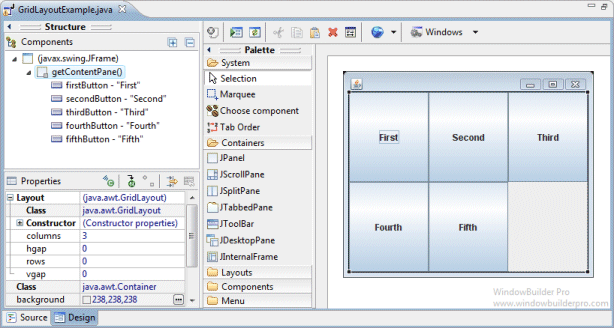
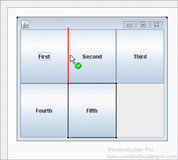
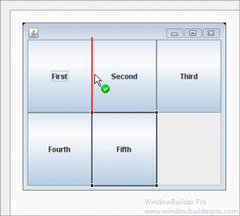
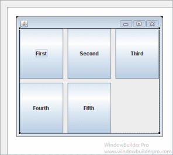
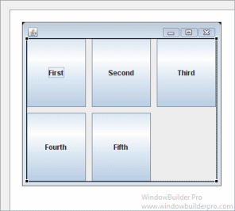

The GridLayout class is a layout manager that lays out a
container's components in a rectangular grid. The container is divided
into equal-sized rectangles, and one component is placed in each
rectangle. When both the number of rows and the number of columns have
been set to non-zero values, either by a constructor or by the
setRows and setColumns methods, the number of columns
specified is ignored. Instead, the number of columns is determined from
the specified number of rows and the total number of components in the
layout. So, for example, if three rows and two columns have been
specified and nine components are added to the layout, they will be
displayed as three rows of three columns. Specifying the number of
columns affects the layout only when the number of rows is set to zero.
Main Features
- Select GridLayout from the Layouts palette and
drop it on a JFrame or JPanel

- Graphical feedback is provided for all drop and move
interactions
 

- Horizontal and vertical gaps can be specified using the
Property Pane
 

- The number of columns and rows can be specified using the
Property Pane


Graphical Feedback
- When moving a widget or adding a new widget, the current drop
point is highlighted in red


|